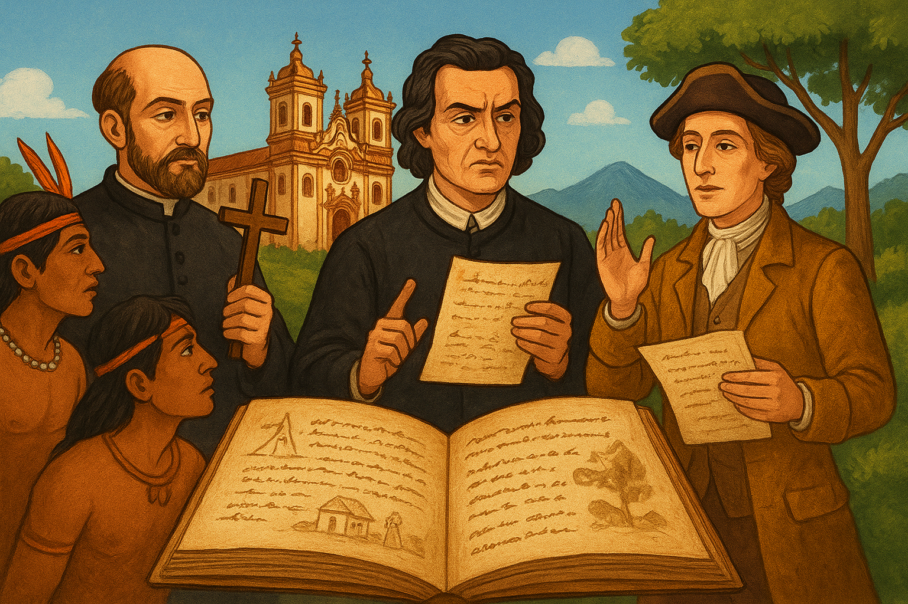

Literatura Colonial Brasileira: fases, sentidos e referenciais teóricos
A Literatura Colonial brasileira (séculos XVI ao XVIII) reflete os primeiros passos da produção literária no país, passando de registros utilitários até discursos artísticos e ideológicos que começam a formar uma identidade cultural emergente.
1) Literatura de Informação (século XVI)
Nesta fase inicial, encontramos cartas, crônicas e relatos descritivos que tinham como objetivo destinar informações à Coroa portuguesa sobre a nova terra: sua fauna, flora, povos e riquezas. Ainda sem intenção literária evidente, esses textos inauguram temas e imagens que serão reaproveitados pela literatura subsequente.
“A literatura se organiza como sistema quando autores, obras e público se articulam; nos relatos quinhentistas vemos o embrião desse sistema, ainda voltado à informação e ao serviço da metrópole.” – Antonio Candido
- Antonio Candido — Formação da Literatura Brasileira
- Alfredo Bosi — História Concisa da Literatura Brasileira
- Afrânio Coutinho — Introdução à Literatura no Brasil
- Laura de Mello e Souza — estudos sobre cultura e sociedade coloniais
2) Literatura Jesuítica (séculos XVI–XVII)
Com a atuação dos jesuítas, a produção literária torna-se ferramenta de catequese e instrução religiosa: veremos sermões, autos, catecismos e poemas voltados à conversão dos povos nativos e à manutenção do controle cultural e simbólico.
“A produção jesuítica combina doutrina e pragmatismo: o texto é ferramenta de catequese, governança espiritual e comunicação entre mundos.” – Serafim Leite
- Serafim Leite — História da Companhia de Jesus no Brasil
- Alcir Pécora — estudos sobre sermões e retórica sacra
- Luiz Costa Lima — representações coloniais e teoria da colonialidade
- Alfredo Bosi — leitura histórico-crítica da missão jesuítica
3) Barroco (século XVII e início do XVIII)
No Barroco luso-brasileiro, a literatura assume formas mais elaboradas e carregadas de tensão: antíteses, paradoxos, metáforas complexas. A produção poética e satírica espelha uma sociedade em conflito entre corpo e espírito, pecado e salvação, fidelidade e exagero retórico.
“O Barroco luso-brasileiro é uma poética da persuasão: regula afetos e conflitos por meio de dispositivos retórico-morais inscritos na ordem colonial.” – João Adolfo Hansen
- João Adolfo Hansen — estudos sobre sátira e retórica barroca
- Massaud Moisés — A Literatura Brasileira (síntese crítico-histórica)
- Alcir Pécora — retórica sagrada e política nos sermões barrocos
- Afrânio Coutinho — panorama crítico do Barroco no Brasil
4) Arcadismo (século XVIII)
Inspirado pelos ideais iluministas e pela vida bucólica, o Arcadismo apresenta uma escrita mais racional, equilibrada e formalmente regular. São versos que enaltecem a simplicidade, a harmonia com a natureza e buscam clareza estética, contrapondo-se ao Barroco ainda dominante.
“O Arcadismo é etapa de amadurecimento: a norma clássica e o público letrado consolidam um circuito literário mais autônomo na colônia.” – Antonio Candido
- Antonio Candido — formação do sistema literário
- Ivan Teixeira — estudos sobre Arcádia e Ilustração
- Alfredo Bosi — leitura crítica do projeto árcade
- Massaud Moisés — síntese histórico-literária do período
Por que essas fases importam?
Cada etapa da Literatura Colonial testemunha não só uma mudança de estilo, mas a transição de uma escrita utilitária e religiosa para uma produção mais autônoma e reflexiva — prenúncio da emergência literária brasileira, que se afirmará no século XIX.
Referências
CANDIDO, Antonio. Formação da Literatura Brasileira: momentos decisivos. 11. ed. Rio de Janeiro: Ouro sobre Azul, 2014. 2 v.
BOSI, Alfredo. História Concisa da Literatura Brasileira. 53. ed. São Paulo: Cultrix, 2017.
COUTINHO, Afrânio. Introdução à Literatura no Brasil. 13. ed. Rio de Janeiro: Bertrand Brasil, 1999.
MOISÉS, Massaud. A Literatura Brasileira: origens e unidade (1500–1960). São Paulo: Cultrix, 2001.
HANSEN, João Adolfo. A sátira e o engenho: Gregório de Matos e a Bahia do século XVII. 2. ed. São Paulo: Companhia das Letras, 1989.
PÉCORA, Alcir. Teologia e Política no Sermão: Padre Vieira. São Paulo: Edusp, 1994.
LEITE, Serafim. História da Companhia de Jesus no Brasil. 10 v. Lisboa: Portugália; Rio de Janeiro: Instituto Nacional do Livro, 1938-1950.
TEIXEIRA, Ivan. Arcádia e Ilustração. São Paulo: Edusp, 1999.
DE MELLO E SOUZA, Laura. O diabo e a Terra de Santa Cruz: feitiçaria e religiosidade popular no Brasil colonial. São Paulo: Companhia das Letras, 1986.